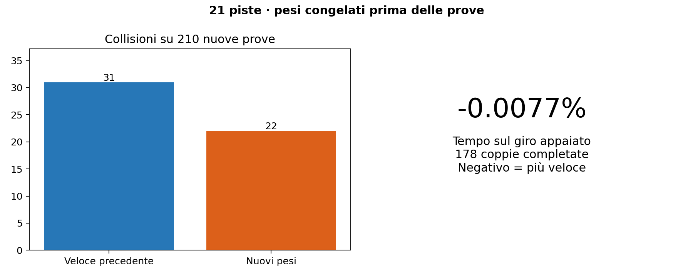

| Modello | Giri completati | Collisioni | Tempo appaiato |
|---|---|---|---|
| Veloce precedente | 179/210 | 31 | riferimento |
| Nuovi pesi | 188/210 | 22 | -0.0077% |

Due modifiche ai pesi
La soglia della parete sinistra passa da 0,4 a 0,6 m. Nelle sole righe 1, 14, 41 e 61 del primo strato viene incorporato un filtro gaussiano con ampiezza di due raggi, circa 0,5°. Cambiano 4.321 scalari rispetto al candidato precedente. Gli strati condivisi influiscono anche sulla velocità. Su 9.319 osservazioni di sviluppo la variazione assoluta media comandata è 0,01046 m/s.
| Ipotesi | Completamenti, precedente 12/21 | Tempo appaiato |
|---|---|---|
early_panic |
14/21 | +0.012% |
exit_support |
0/21 | — |
exit_only |
0/21 | — |
exit_approach |
14/21 | +0.313% |
early_smooth |
15/21 | +0.109% |
turn_preview |
12/21 | -0.894% |
Le correzioni generiche all’uscita di curva portano a zero completamenti. Anticipare le curve destre accelera alcuni giri ma perde successi. Nei 210 casi della fase precedente, già osservati, sia early_panic sia early_smooth completano 184 giri contro 180. Il secondo conserva meglio il tempo e viene congelato per le dieci nuove partenze da 50101 a 51010 su ciascuna pista.
Il muro visto dal corpo del veicolo
Il rilevatore del simulatore usa una lunghezza di 0,3302 m e trascura la deriva nella proiezione della velocità. Un controllo separato confronta il rettangolo orientato della carrozzeria di 0,58 × 0,31 m con i pixel occupati della mappa ogni 0,01 s. Sui 420 episodi, per 1.774.769 pose, emergono contatti in sette giri completati precedenti e undici del candidato. I completamenti senza contatti campionati passano da 172 a 177. Sulle 170 coppie pulite la differenza di tempo è −0,0037%.
Nella coorte prefissata con seed 50101, 17 piste hanno una coppia completata. In media la lunghezza cresce dello 0,0072%, il quinto percentile del margine migliora di 0,403 cm e il 95º percentile dello scarto dalla raceline scende di 0,602 cm. La risoluzione della mappa e il moto fra due pose limitano queste misure. Budapest, Monza e Spa erano state scelte per le figure prima del test.
Ogni episodio dura al massimo 200 secondi simulati. Per completare il giro occorre visitare almeno il 99% dei waypoint in ordine e attraversare la linea di partenza senza una collisione segnalata. Partenze e rumore LiDAR sono appaiati. I tempi si confrontano sulle stesse partenze completate dai modelli indicati. Un valore negativo indica un giro più rapido.
Come leggere il margine raster
Per ciascuna posa l’audit ruota il rettangolo della carrozzeria e rappresenta ogni pixel con intensità ≤128 come un quadrato occupato. Un indice spaziale seleziona le celle vicine, poi la distanza euclidea tra poligoni misura la separazione. Lo zero indica contatto o sovrapposizione. Lo scarto dalla raceline si misura rispetto al segmento più vicino, la lunghezza percorsa lungo la polilinea dei centri salvati. Le tracce esplorative a 0,1 s precedono la registrazione finale a 0,01 s.
A YasMarina 2202, il centro dista 3,91 cm dal muro alla partenza, ma il corpo già lo interseca. Su tutti gli esiti finali, gli episodi con almeno un contatto raster scendono da 30 a 23 e i campioni con contatto da 123 a 98. Degli undici giri completati con contatto dal candidato, sette sono a Monza, tre a Oschersleben e uno a YasMarina. A Monza un controllo indipendente trova un vertice del veicolo guidato da wall_panic_fast dentro una cella occupata a 36,33 s, seed 50101. La mappa ha risoluzione 9,585 cm/pixel.
Completamenti e tempi per pista
| Pista | Precedente | Candidato | Tempo appaiato |
|---|---|---|---|
| Austin | 9/10 | 9/10 | +0.090% |
| BrandsHatch | 10/10 | 10/10 | -0.010% |
| Budapest | 9/10 | 10/10 | +0.014% |
| Catalunya | 10/10 | 10/10 | +0.010% |
| Hockenheim | 10/10 | 10/10 | +0.029% |
| IMS | 8/10 | 8/10 | +0.000% |
| Melbourne | 10/10 | 10/10 | -0.024% |
| MexicoCity | 10/10 | 10/10 | +0.031% |
| Monza | 3/10 | 7/10 | +0.101% |
| MoscowRaceway | 9/10 | 10/10 | -0.181% |
| Nuerburgring | 10/10 | 10/10 | -0.031% |
| Oschersleben | 9/10 | 9/10 | -0.019% |
| Sakhir | 9/10 | 10/10 | -0.072% |
| SaoPaulo | 10/10 | 10/10 | -0.012% |
| Sepang | 10/10 | 10/10 | -0.020% |
| Silverstone | 10/10 | 10/10 | +0.013% |
| Sochi | 0/10 | 0/10 | — |
| Spa | 8/10 | 10/10 | +0.050% |
| Spielberg | 10/10 | 10/10 | -0.062% |
| YasMarina | 5/10 | 5/10 | +0.164% |
| Zandvoort | 10/10 | 10/10 | -0.053% |